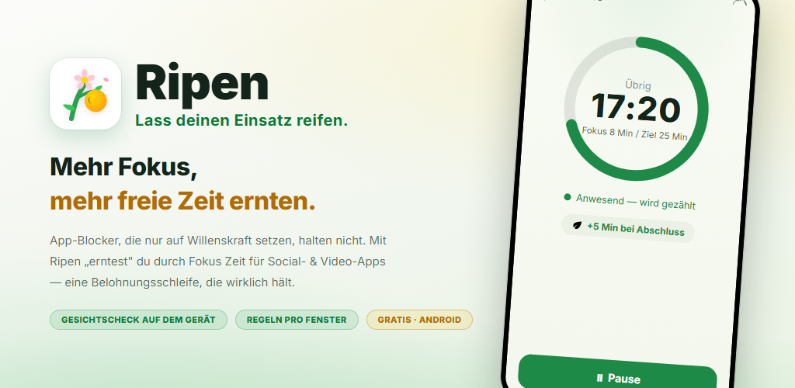
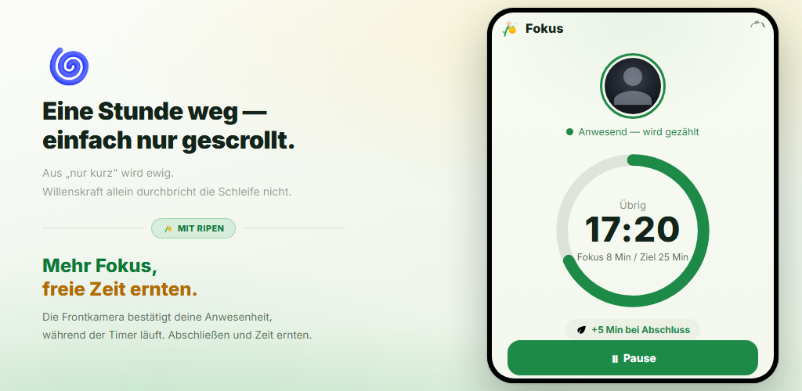
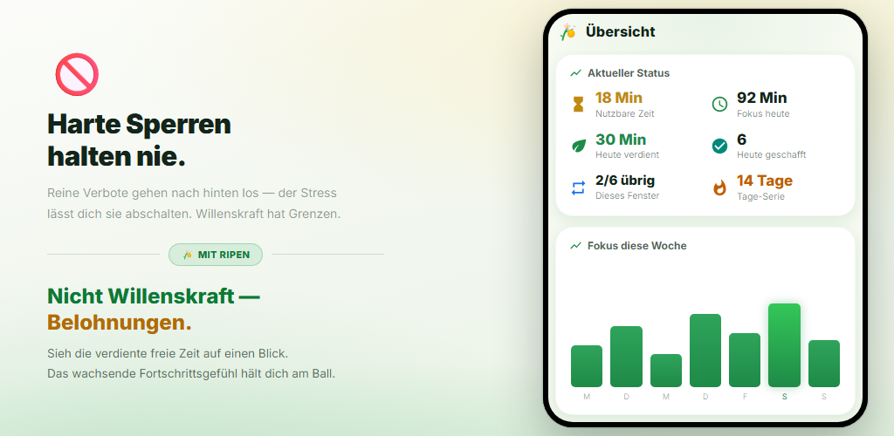
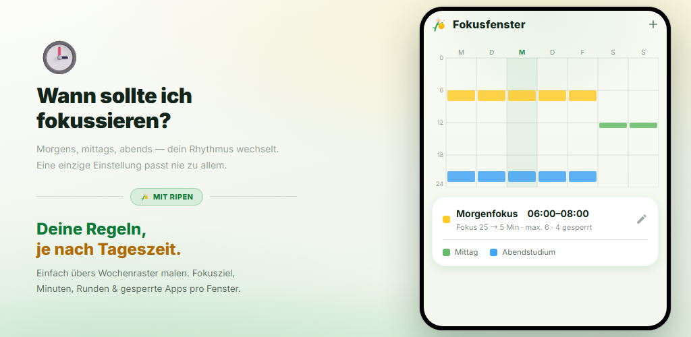
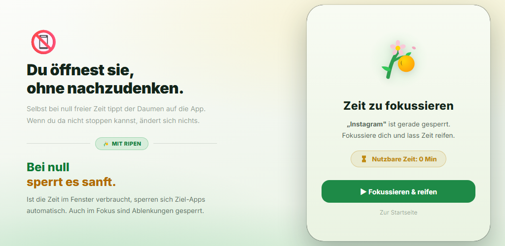
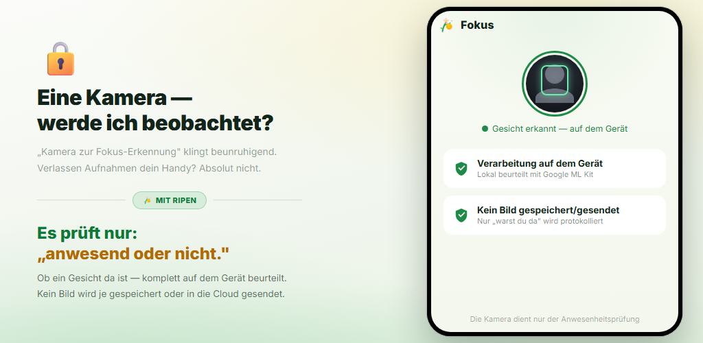

Belohnungsschleife
Jedes Mal, wenn du einen Fokus-Timer abschließt, verdienst du Zeit für Social- und Video-Apps. Belohnungen, nicht Willenskraft, verändern dein Verhalten.
App-Blocker, die nur auf Willenskraft setzen, halten nicht lange. Ripen ist eine belohnungsbasierte Gewohnheits-App: Je mehr du dich konzentrierst und lernst, desto mehr Zeit „erntest“ du für Social- und Video-Apps. Die Anwesenheitsprüfung per Kamera läuft auf deinem Gerät, und du kannst sie für jedes Zeitfenster ausschalten.
Android 8.0+ · Kostenlos · Keine Werbung · Kein Konto nötig

Keine komplizierte Einrichtung. Du legst nur fest, wann du dich konzentrierst, wie lange und wie viel Zeit du zurückbekommst.
Male das Wochenraster aus, um die Tage und Uhrzeiten zu wählen, an denen du dich konzentrieren willst
Ist die Anwesenheitsprüfung an, bestätigt die Frontkamera deine Anwesenheit, während der Timer herunterzählt
Jede abgeschlossene Runde bringt die Minuten, die du festgelegt hast (ein Vokabelquiz geht auch)
Bei 0 verbleibenden Minuten werden die gewählten Apps sanft gesperrt
In Zeitfenstern mit aktiver Anwesenheitsprüfung läuft der Fokus-Timer nur, solange dein Gesicht vor dem Bildschirm ist. Erreichst du das Ziel, verdienst du die festgelegten Minuten für Social- oder Video-Apps. Vorzeitig abgebrochene Runden bringen nichts.

Sieh nutzbare Zeit, Fokus heute, heute verdiente Zeit und deine Tage-Serie auf einen Blick. Wochen- und Monatstrends sowie eine Heatmap nach Stunden zeigen, wann du dich am besten konzentrierst.

Male einfach das Wochenraster aus, um die Tage und Uhrzeiten festzulegen, an denen du dich konzentrieren willst. Jedes Fenster hat eigenes Fokusziel, eigene Minuten pro Runde, Rundenlimit, gesperrte Apps und Anwesenheitsprüfung per Kamera. Außerhalb der Fenster bist du frei.

Hast du die Zeit eines Fensters aufgebraucht, erscheint beim Öffnen einer gewählten App ein Sperrbildschirm. Ablenkende Apps werden auch während Fokuseinheiten gesperrt. Und eine „Einstellungssperre“ verhindert, dass du die Regeln später lockerst.

Ein reiner Timer zählt weiter, auch wenn du weggehst. Ripen prüft mit der Frontkamera nur, ob ein Gesicht vor dem Bildschirm ist — auf deinem Gerät. Kein Bild wird gespeichert oder gesendet. Du kannst auch Fenster ohne Kamera wählen.

Sieh dir an, wie du dich konzentrierst, Zeit erntest und wie deine Apps gesperrt werden, sobald sie aufgebraucht ist.
Dreh „Ich will aufhören, schaffe es aber nicht“ um — mit Belohnungen.
Jedes Mal, wenn du einen Fokus-Timer abschließt, verdienst du Zeit für Social- und Video-Apps. Belohnungen, nicht Willenskraft, verändern dein Verhalten.
Die Frontkamera prüft nur, ob du vor dem Bildschirm bist. Die Verarbeitung erfolgt auf deinem Gerät, kein Bild wird gespeichert oder gesendet. Du kannst sie pro Fenster ausschalten.
Lege mehrere Fenster nach Tag und Uhrzeit fest. Jedes Fenster hat eigenes Fokusziel, eigene Minuten, Rundenlimit und gesperrte Apps.
Beantworte eine festgelegte Anzahl englischer Vokabelfragen (4 Antworten) richtig, um eine Runde zu verdienen. Rund 10.000 Wörter nach CEFR-Niveau, mit Einstufungstest, Wiederholungsliste und eigenen Wortdecks.
Minuten, die du ab Beginn eines Fensters nutzen kannst — noch bevor du dich konzentrierst. Sie kommen zu deinen Fokus-Belohnungen hinzu.
Eine Selbstbindungs-Funktion, die verhindert, dass du an den Einstellungen drehst, um mehr Freizeit herauszuholen. Lockernde Änderungen erfordern eine geplante Entsperrung und 1–30 Tage Wartezeit.
Fokustrends, ein Fokus-Kalender, Abschlussquote, deine besten Fokusstunden und Nutzungstrends gesperrter Apps — alles visualisiert.
Ohne die App zu öffnen, zeigt eine dauerhafte Benachrichtigung nutzbare Zeit, das nächste Fokusfenster und die verbleibende Zeit deiner Einheit. Beim Abschluss gibt es Ton und Vibration.
Wähle das Design System, Hell oder Dunkel. Die App gibt es in 12 Sprachen, darunter Deutsch, Englisch und Japanisch.
„Eine Kamera, die den Fokus prüft“ kann beunruhigend klingen. Ripen ist nach dem Prinzip Datenschutz zuerst gestaltet.
Die Anwesenheitserkennung per Gesicht läuft mit Google ML Kit auf deinem Gerät. Videobilder werden nie an einen externen Server gesendet.
Geprüft wird nur, ob ein Gesicht da ist. Fotos und Videos werden nie gespeichert oder gesendet. Erfasst wird nur, wie viele Sekunden du anwesend und konzentriert warst.
Fokusaufzeichnungen und Einstellungen werden auf deinem Gerät gespeichert und nie an Server von Ripen gesendet. Ist die Android-Sicherung aktiv, sind deine Einstellungen in der Sicherung deines Google-Kontos enthalten und werden bei einer Neuinstallation wiederhergestellt.
Keine Registrierung, kein Login und weder Werbung noch Analyse-Tools. Herunterladen und sofort loslegen.
Bei Google Play herunterladen